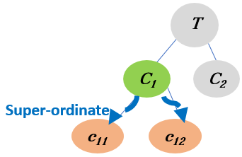

Health-related Quality of Life Needs of Patients with Long-term Respiratory Illnesses
This is a collection of video segments from YouTube videos with patient stories.
They have been automatically segmented, characterised and linked to domain concepts.
The videos have been linked via "Super Ordinate Linking" which means:
To become aware of a generic concept (Green oval) from a topic T, you will explore videos about its children concept which are more specific (Orange ovals).

Became aware of the generic concept REHABILITATION from ENVIRONMENT by exploring more specific concepts EXERCISE.
Each video segment will start from a time point in the video and will stop when the corresponding concepts are covered.
You can re-watch the video segment or watch other parts of the video, if you wish so.
The next video segment mentions EXERCISE (relates to ENVIRONMENT ). The segment has been taken from a YouTube video with ID= uJoY4oMLXEY , and starts at 1.38 with a duration of 37 seconds.
The next video segment mentions EXERCISE (relates to ENVIRONMENT ). The segment has been taken from a YouTube video with ID= VyGp12XbPzs , and starts at 0.59 with a duration of 81 seconds.
The next video segment mentions EXERCISE (relates to ENVIRONMENT ). The segment has been taken from a YouTube video with ID= GV3Rew061FA , and starts at 1.31 with a duration of 216 seconds.
You watched video segments about ( EXERCISE ) which is part of (REHABILITATION ). These concepts are related to ENVIRONMENT.
The segments were automatically extracted from popular YouTube videos related to the Health-related Quality of Life Needs of Patients with Long-term Respiratory Illnesses, using algorithms for segmentation, characterisation and linking based on a theory for concept learning.
We hope you found the collection of video segments helpful.